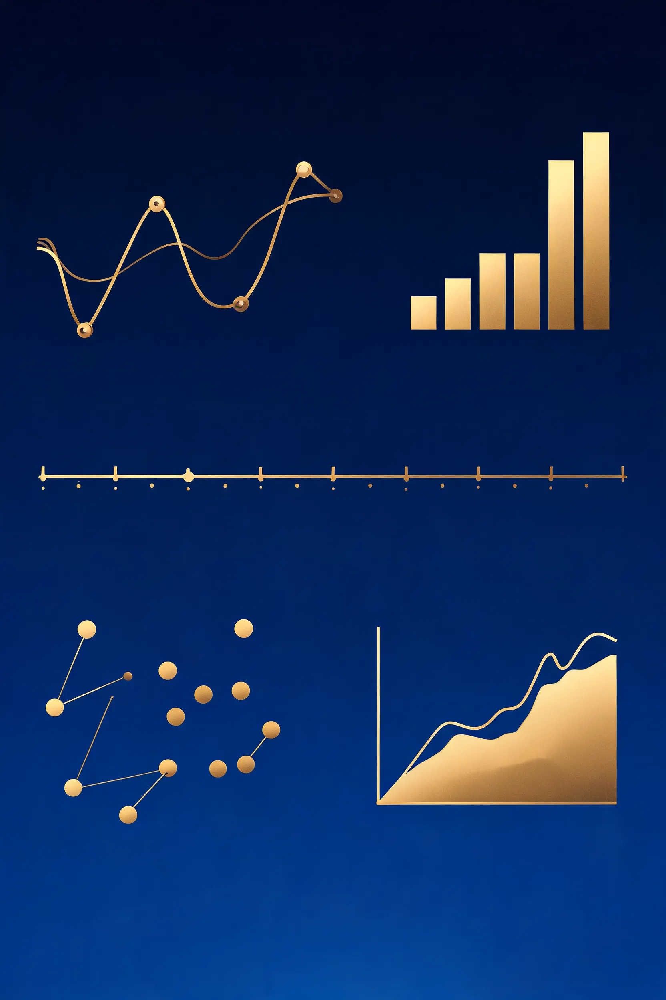
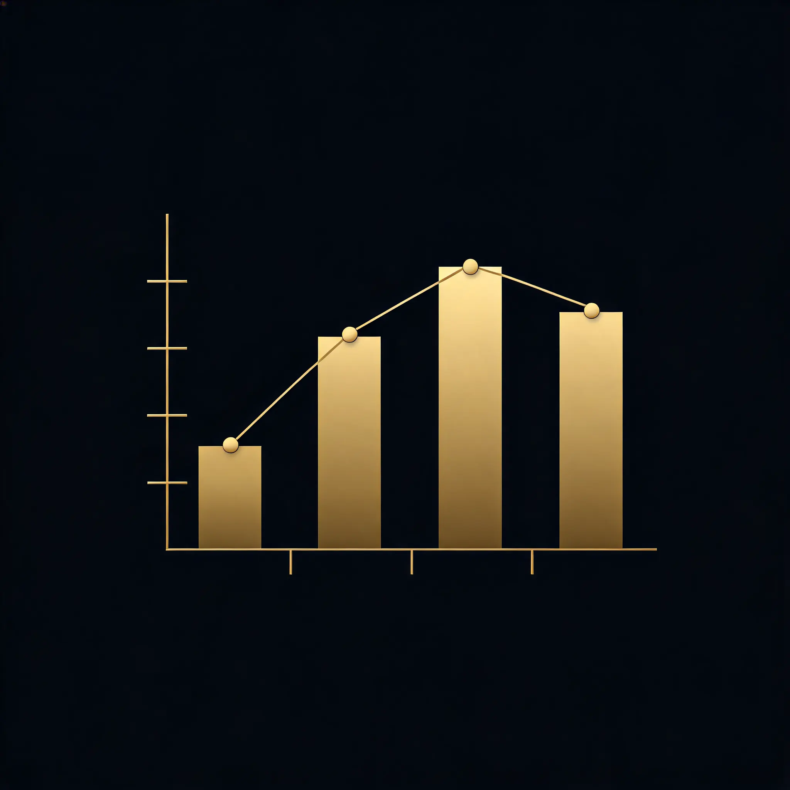
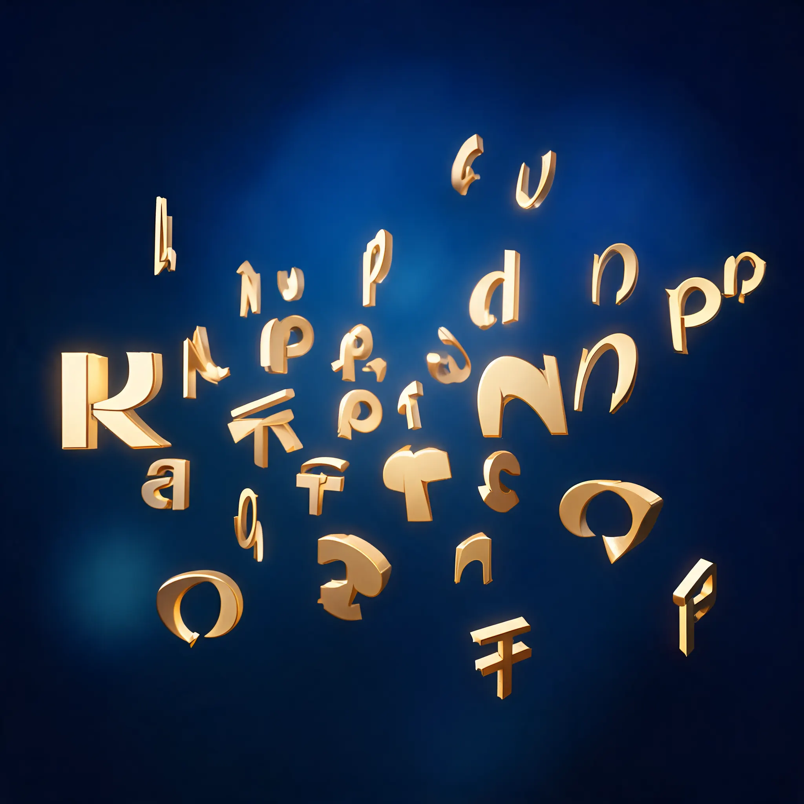

连接你的知乎账号，一键生成多维度创作分析。数据仅经浏览器与后端透传，不落库、不记录、不泄露。
前往 developer.zhihu.com/profile 登录并生成 Access Secret，粘贴到下方。
Secret 仅用于本次请求透传至知乎 API，后端不存日志、不入库、不缓存。分析完成后，建议你立即前往知乎开放平台删除该 Secret。
本项目 完全开源，可自行审查后端代码。

每个点代表一篇内容，颜色区分类型，大小映射互动热度。滚动页面，时间线将逐一展开。
热力图展示每月发布密度，色块越亮代表产出越多。右侧是年度趋势折线。
看看你的创作精力主要投向了哪些内容类型，以及各类型的互动效率如何。
点赞、评论、收藏的分布直方图，看看你的内容互动集中在哪个区间。标记了中位数和P90分位。
从标题和摘要中提取高频词汇，字号越大出现频率越高。一眼看出你最关注的话题领域。

逐年对比产出与互动，看看你的创作生涯如何演变。
按小时和星期分布，揭示你的创作作息规律。
按时间展示每条内容的互动量散点图，移动平均线揭示趋势是上升还是下降。
一键复制当前分析结果摘要，方便分享或存档。